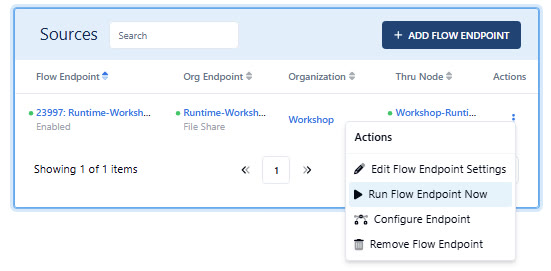
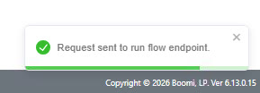
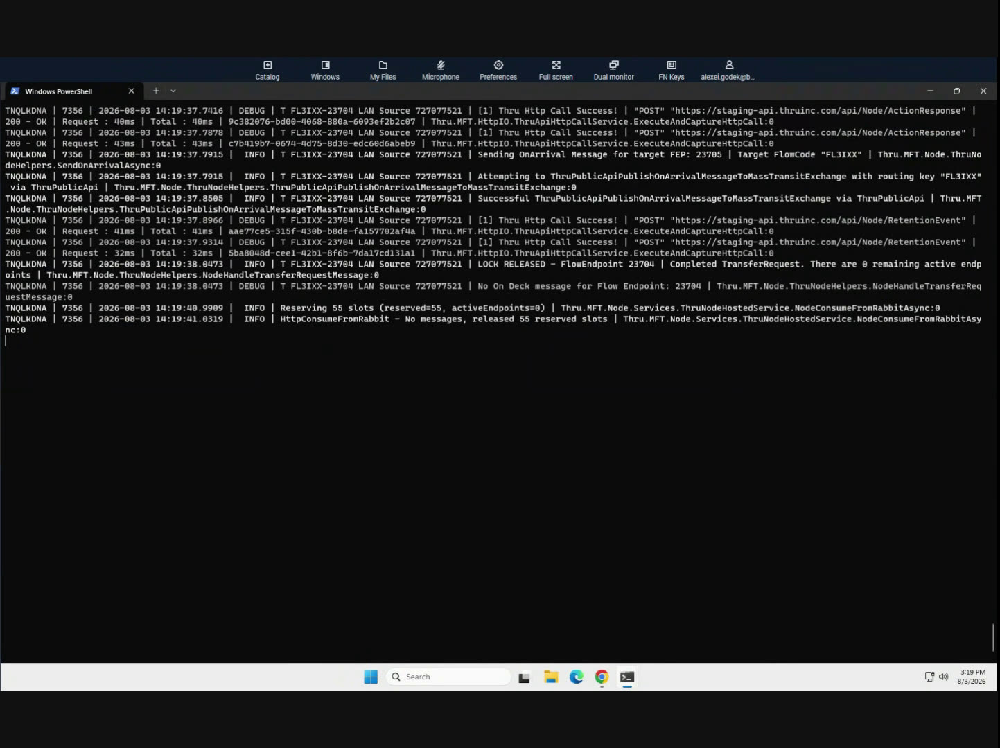
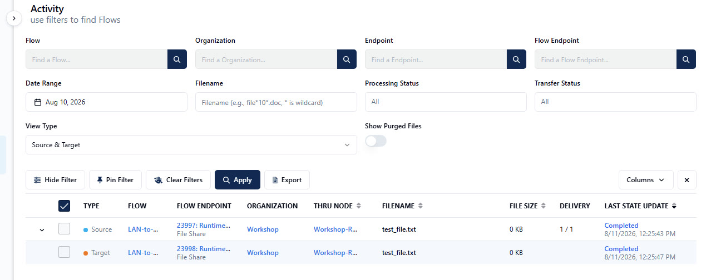
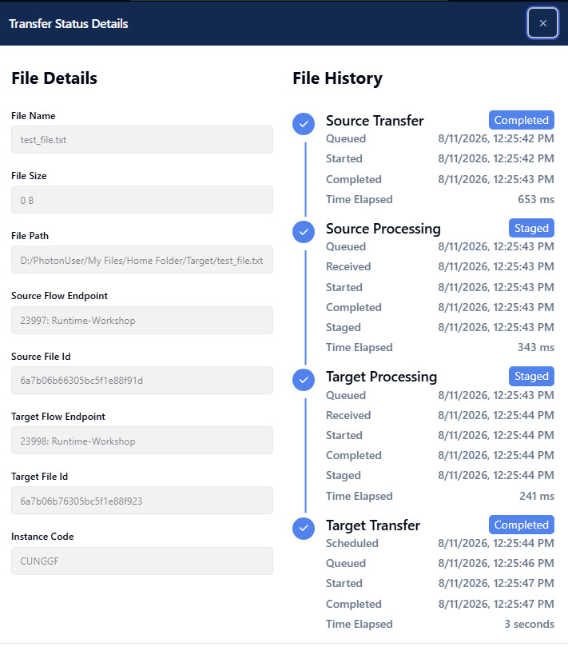

Trigger the flow and verify the transfer
Every external flow endpoint has a manual trigger — use it the first time you set up a new flow so you don't have to wait on a schedule to confirm everything works.
⏰ ~5 minOpen the Actions menu on your Source flow endpoint
Select the ⋮ action icon next to your Source endpoint and choose Run Flow Endpoint Now.

Confirm the trigger was accepted
You'll see a toast confirming the request was sent to the runtime.

Watch the runtime process it live
Flip back to your PowerShell window running launcher.ps1 — you'll see live log lines as the runtime picks up the file, sends it through the flow, and releases the lock once the transfer completes.

Check the Activity page in MFT
Go to the Activity dashboard. You should see test_file.txt with a status of Completed. Expand the Source row so the Target is also displayed.

Open the transfer for full detail
In the Last State Update column, click on Completed for the Target row. This shows the complete file history — source transfer, source processing, source delete (remember: the runtime copies, then deletes the original only after processing succeeds), target processing, and target transfer, each timestamped.
